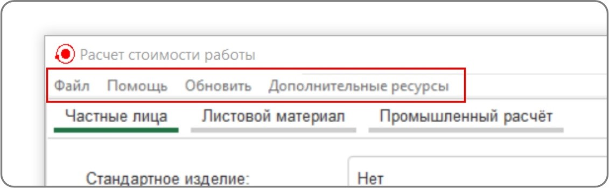
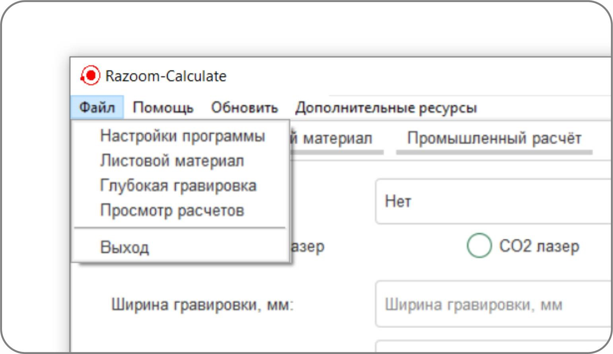
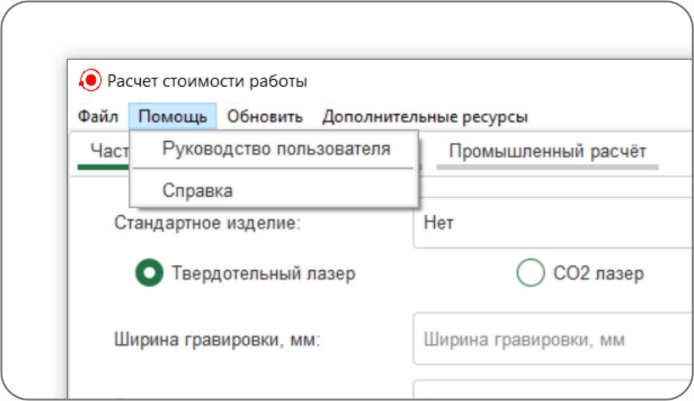
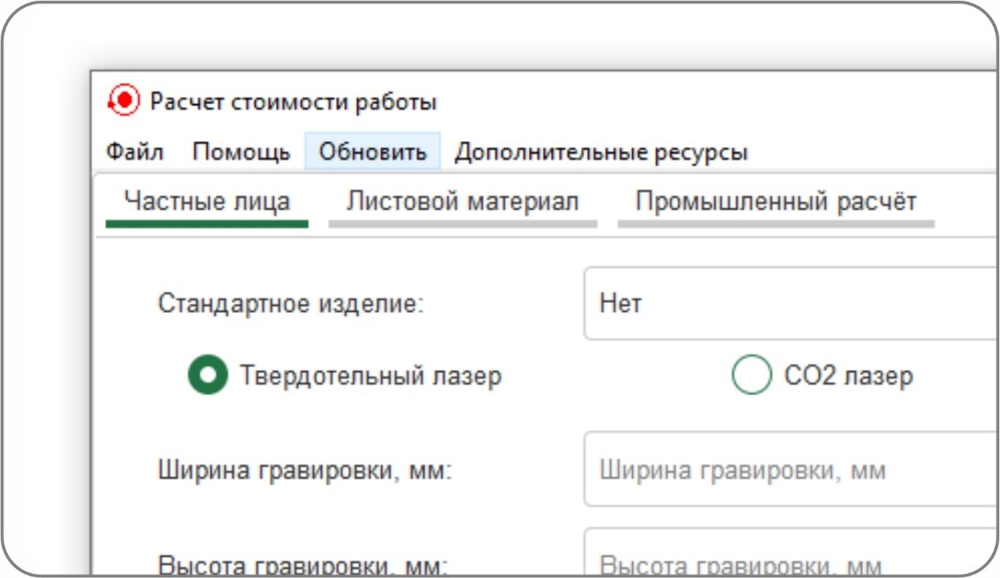
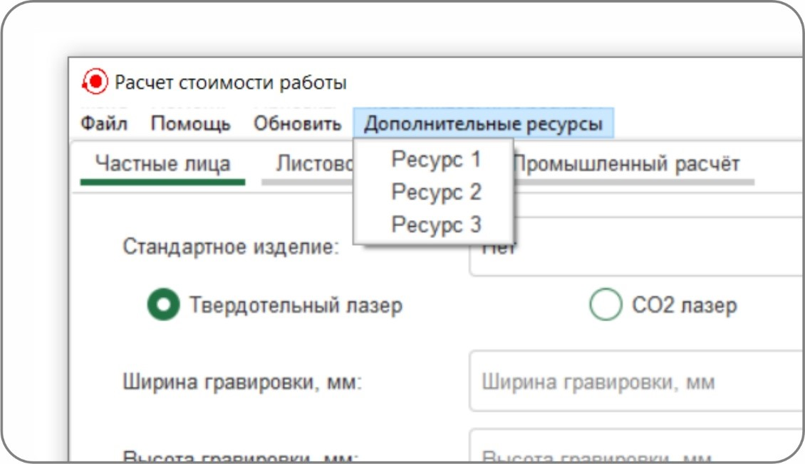

Полоса меню расположена в верхней части главного окна приложения
(Рисунок 1) и предоставляет доступ к основным настройкам,
справочным материалам, а также дополнительным функциям программы.

Рисунок 1 - Полоса меню приложения
Полоса меню приложения состоит из следующих разделов:
Раздел «Файл» (Рисунок 2) – содержит команды для настройки
программы и управления её основными функциями.

Рисунок 2 - Раздел меню "Файл"
Просмотр расчетов – открывает отчет с совершенными в
программе расчетами;
Выход – закрывает приложение.
Раздел «Помощь» (Рисунок 3) – предоставляет доступ к
документации и справочным материалам.

Рисунок 3 - Раздел меню "Помощь"
Основные команды раздела "Помощь":
Руководство пользователя – открывает подробное
руководство пользователя;
Справка – выводит краткую справку с подсказками по
использованию основных функций программы.
Команда «Обновить» (Рисунок 4) – позволяет
синхронизировать текущее состояние программы с файлами
конфигурации (например, с настройками, которые были изменены
вручную или через другие окна). Это особенно полезно, если
изменения настроек не отразились сразу.

Рисунок 4 - Команда меню "Обновить"
Раздел «Дополнительные ресурсы» (Рисунок 5) – открывает в
веб-браузере ссылки на внутренние документы компании и другие
полезные ресурсы. При нажатии на элемент списка открывается
соответствующий ресурс в браузере.

Рисунок 5 - Раздел меню «Дополнительные
ресурсы»